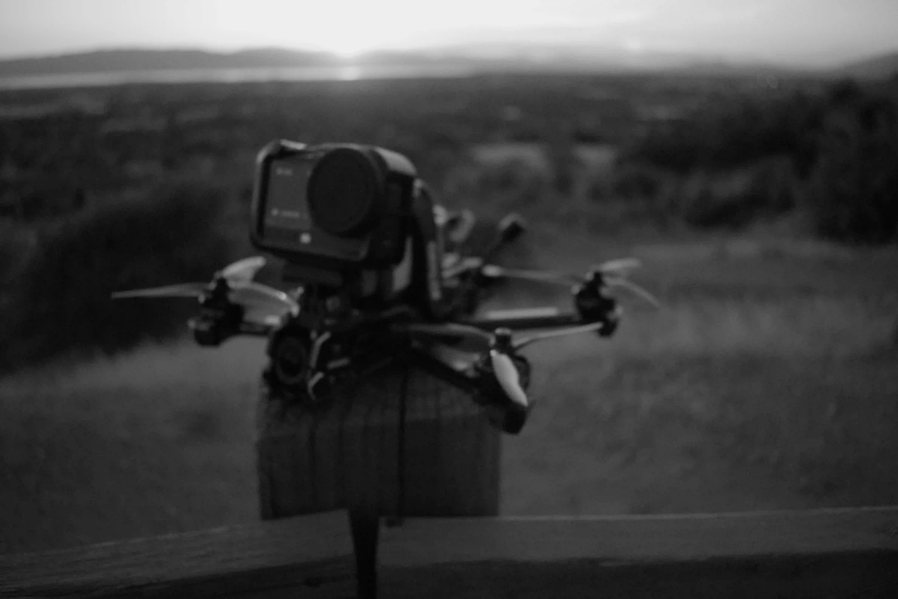

FPV stories
Why I Fly
From crashing cheap quadcopters to flying professionally, here's why I keep coming back to FPV.

My dad is a pilot, and he flew throughout my childhood. After going up with him in his plane, I knew I was addicted to seeing life from another vantage point. I wanted to fly, but I didn’t want to join the military, and I liked the freedom of civilian life.
In high school, I fantasized about building and flying drones. I flew cheap quadcopters and crashed pretty much every time I attempted to fly them. It wasn’t until college that I seriously considered giving it a try. I met a friend who had flown stock footage in Iceland with a 360 camera attached to a drone, and seeing what he was doing convinced me to get into it myself.
I started with a DJI Avata and learned the basics. The more I explored the drone community, the more I discovered the differences between freestyle and cinematic flying. I watched reels from some of the classic drone content creators and saw racers mind-blowingly navigate tight courses while competing internationally. I wanted to be a part of that.
My first “real” drone was a 5-inch quad I bought off Facebook Marketplace. It was a Rotor Riot build with a Tanq frame, one of the thickest and toughest carbon fiber frames on the market.
In retrospect, I probably should have kept that drone, but I absolutely trashed it. I smashed it into just about everything in the park, and as parts broke, I attempted to repair them. Eventually, I reached a point where I couldn’t fix it anymore, so I sold it on Facebook Marketplace.
The guy who bought it showed me some kindness. Instead of just buying the broken drone, he traded me several different drone parts and demonstrated how to properly solder wires, along with some basic FPV techniques.
From there, I continued learning to build and fly drones myself.
I built my first 5-inch quad with a 3D-printed frame, which promptly exploded midair. After that experiment, I replaced the frame with a GEPRC Vapor O4 frame and finally started getting better at handling the power behind the throttle.
It’s hard to describe the feeling of flying FPV to someone who hasn’t experienced it.
It’s not like a video game where you’re controlling an avatar on a screen. You feel connected to the drone. You experience the wind, the speed, and the almost blinding motion of quick, jostling turns. You’re not physically in the air, but there’s a part of your brain that feels like you are.
And I think I keep flying, even after the crashes and the empty wallets, because I’m still chasing that same feeling I had going up in my dad’s plane.
Whether it’s flying for weddings, TV shows, or just out in the local park, I’m still looking for a different way to see the world. And somewhere out there, you’ll find us drone pilots with motors screaming as we punch through the air.